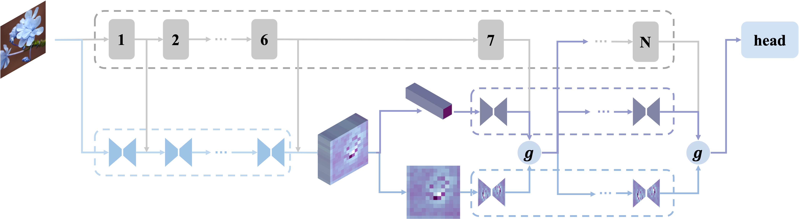

About
Publications ( / )
SalaMAnder: Shapley-based Mathematical Expression Attribution and Metric for Chain-of-Thought Reasoning
EMNLP 2025

Generalizable Geometric Image Caption Synthesis
ICLR 2025 on submission
Parameter-Efficient Cross-Layer Feature Fusion via Chebyshev Polynomial Unit
VCIP 2025
GLEAM: Global Share Local Transform MoE for Downstream Transferring With Enhanced Parameter Efficiency
ECAI 2025
Clarifying the Behavior and the Difficulty of Adversarial Training
AAAI 2024
Towards the Dynamics of a DNN Learning Symbolic Interactions
NeurIPS 2024
Enhancing Chain-of-Thought Reasoning with Critical Representation Fine-tuning
ACL 2025

D2-RST: Dual-Dimensional Residual Side Tuning for Mitigating Feature Forgetting in Parameter-Efficient Transfer Learning
WACV 2026 on submission
Towards Noise-Robust Medical Segmentation via Chebyshev-Attention-Based Asymmetric UNet
WACV 2026 on submission
A Technical Report on LLM Distillation
Arxiv 2025
Perplexity-Aware Pruning for Efficient Chain-of-Thought Distillation
ICLR 2026 on submission
Bootstrap Prompt Learning with Feature Adaptation for Vision-Language Efficient Tuning
ICLR 2026 on submission
Research Experiences
Machine Learning and Computer Vision Intern and Master's Student
Nov, 2022 - Present
Advised by Prof. Hongkai Xiong and Prof. Wenrui Dai, my researches include:
- Proposed Chebyshev Fusion Unit (CFU), a lightweight feature fusion method to mitigate the challenge of balancing expressiveness and efficiency. Specifically, CFU computed high-order Chebyshev polynomial terms between residual and current-layer features to explicitly model complex cross-layer dependencies with minimal parameters. Comprehensive experiments verify its strong approximation and optimization capability. (VCIP 2025 accepted)
- Proposed Dual-Dimensional Residual Side Tuning (D2-RST) framework to mitigate feature forgetting and progressive spectral decay in deep layers by employing a dual-block side-tuning structure with low-rank linear mapping on aggregated features, and introducing an additional spatial-dimension pathway in parallel with the feature-dimension pathway. The properties and performance of RST are verified through mathematical proof and various experiments. (WACV 2026 on submission)
- Proposed Chebyshev-Attention-Based Semi-Unet (CASUNet), a noise-resilient framework integrating a Semi-UNet backbone with a novel CPA (Chebyshev Polynomial Aggregation) module by first aggregating hierarchical features then expanding to orthogonal polynomial terms. Theoretical and experimental analysis verify its superior noise immunity and competitive performance. (WACV 2026 on Submission)
- Proposed GLEAM, an efficient fine-tuning method for large model parameters. This method leverages the high similarity of parameter matrices in LoRA to construct a low-rank decomposition, further reducing the number of parameters required for fine-tuning while enhancing performance. (ECAI 2025 accepted)
- Proposed PAT, a fault-tolerant multimodal classifier to solve the problem of conflict between prompter learning and adapter tuning. Specifically, it aligns model representations obtained from Soft Prompt and Adapter-based methods and incorporates contrastive learning loss to enhance model performance and generalization. (ICLR 2026 on submission)
LLM Research Intern
Jun, 2025 - Present
Advised by Prof. Jiaxin Huang, my researches include:
- Proposed a perplexity-based method to analyze the long CoT pattern for data selection, after which removed the steps with low perplexity to construct a new dataset. Then conducted SFT and RL on the dataset to enhance the reasoning capacity of LLMs more efficiently without significant degradation of the output diversity. (ICLR 2026 on submission)
MLLM Research Intern
Mar, 2025 - Aug, 2025
Advised by Prof. Tong Zhang, my researches include:
- Proposed Geo-Image-Textualization, a reinforcement learning-based framework to generate high-quality and geometry-centered multimodal data by utilizing a rule-based data generation pipeline and adopting RAFT to further optimize the captions. Then constructed a dataset named GeoReasoning-10K to bridge the gap between visual and linguistic modalities in the geometry domain. Extensive experiments verify the superiority of the dataset for improving multimodal reasoning capacity. (ICLR 2026 on submission)
LLM Research Intern
Mar, 2025 - Aug, 2025
Advised by Prof. Jieping Ye, my researches include:
- Proposed SalaMAnder, a Shapley-value-based framework for quantifying component-level contributions in CoT reasoning. Specifically, we develop an efficient stratified sampling algorithm to compute Shapley value for mathematical expression attribution and CoSP (Cardinality of Shapley Positives) metric. Theoretical derivation and comprehensive validation across multiple models and benchmarks present a robust monotonic correlation between CoSP and model performance, providing theoretical explanations for the empirical success of CoT. (EMNLP 2025 accepted)
- Proposed CRFT, a novel method that identifies and optimizes critical representations that integrate significant information from preceding layers or regulate subsequent layer representations. CRFT effectively optimizes the representations in a low-rank linear subspace through information flow analysis. (ACL 2025 accepted)
- Explored the mechanism of LLM distillation and explained the pattern of long CoT, after which significantly improved the distilled model's reasoning capacity.
Interpretable Machine Learning Intern
Feb, 2022 - Nov, 2022
Advised by Prof. Quanshi Zhang, my researches include:
- Theoretically derived the analytical solution for multi-step adversarial attacks, which explains the reasons behind the optimization difficulties in adversarial training. This is validated through experimental results. (AAAI 2024 accepted)
- Theoretically derived the two-stage dynamic interaction process of DNNs, proving that the network learning process gradually encodes interactions of varying complexity. This provides a theoretical foundation for understanding overfitting. (NeurIPS 2024 accepted)
- Theoretically derived and validated the robustness of concepts with different complexities.
Machine Learning and Computer Vision Intern
May, 2021 - May, 2022
Advised by Prof. Chongyang Zhang, my researches include:
- Developed a Swin Transformer-based model to implement instance segmentation of the workpiece welding area.
- Designed a space-time filter to remove false positive samples in pedestrian detection.
- Developed a YOLOv5-based model to detect tower cranes, recognize dangerous tower cranes, and label the electronic fence.
Engineering Experiences
Quantitative Strategy Research and Machine Learning Intern
Oct, 2024 - Jan, 2025
My research and engineering projects include:
- Developed various models to complete intraday prediction tasks, surpassing the baseline model in global domains (A-shares) and improving performance in live trading within three weeks. Conducted ablation studies on the model to explain the reasons for performance improvement and validate its generalizability.
- Fine-tuned the above model to enhance performance by 10% in local domains (ZZ800 and ZZ1000) while maintaining minimal decrease in overall performance.